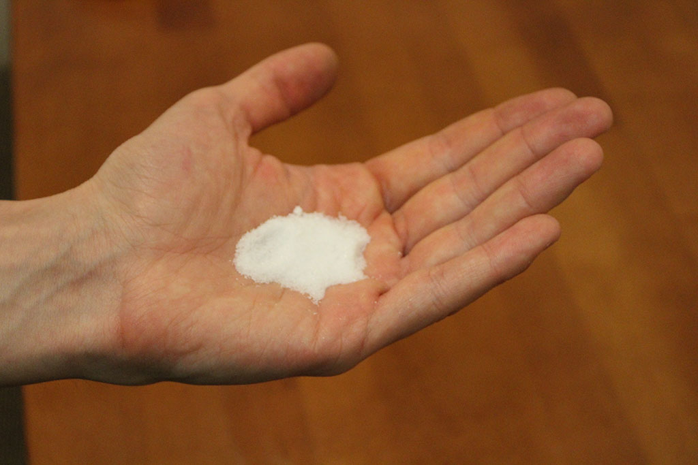
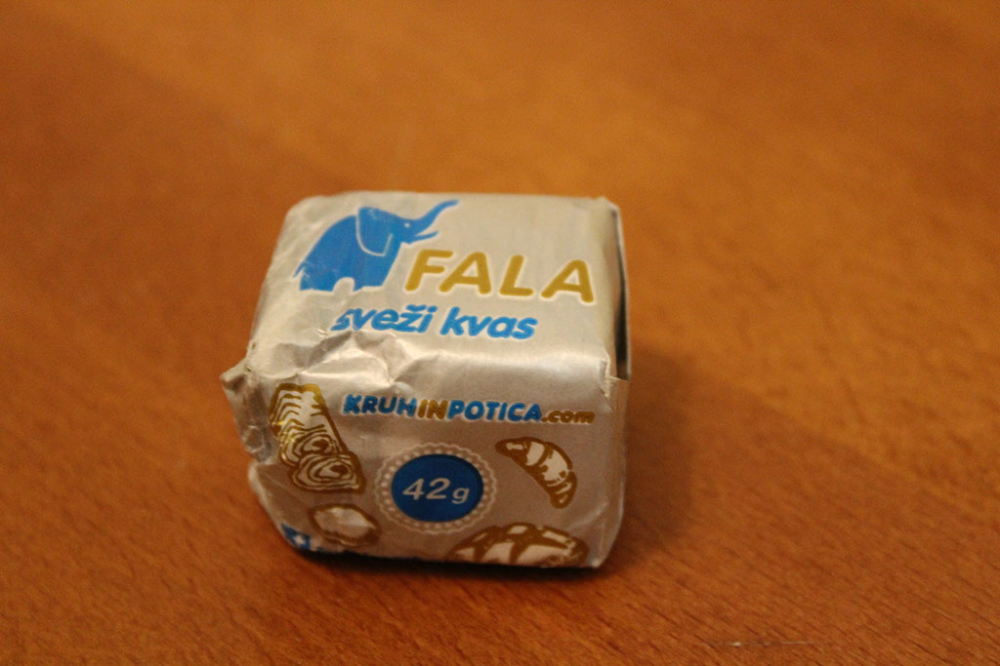
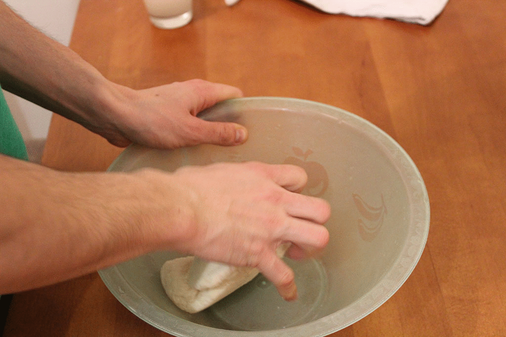

RECEPT ZA SLASTNO PICO MARGERITO
Sestavine:


500g moke
ščep soli
20g kvasa
paradižnikova mezga
začimbe - bazilika in origano
sir po želji, mi smo uporabili Mozzarello in Edamec
Priprava:

V skledo nasujemo moko, dodamo sol in dobro premešamo.
V 200ml mlačne vode zmešamo kvas ter pustimo počivati 5 minut, nato zmes dodamo v skledo.

Vse skupaj zmešamo, nato pa gnetemo približno 3 minute.
Posodo pokrijemo s suho krpo in pustimo vzhajati vsaj dve uri, da se velikost testa podvoji.
Ko je testo dovolj vzhajano, lahko nadaljujemo s pripravo pice.
Najprej naoljimo pekač ali peki papir.
Testo z občutkom raztegnemo čez celoten pekač.

Skupaj zmešamo paradižnikovo mezgo, baziliko in origano
ter z zmesjo premažemo testo po celotni površini.
Sir narežemo ali naribamo, nato pa ga razporedimo po pici KAKOR NAM PAŠE.
Pico damo v pečico in pečemo 10-15 minut pri 220°C.
Pico vzamemo iz pečice in jo damo v usta.
DOBER TEK!